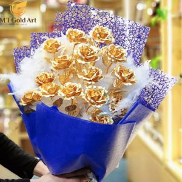
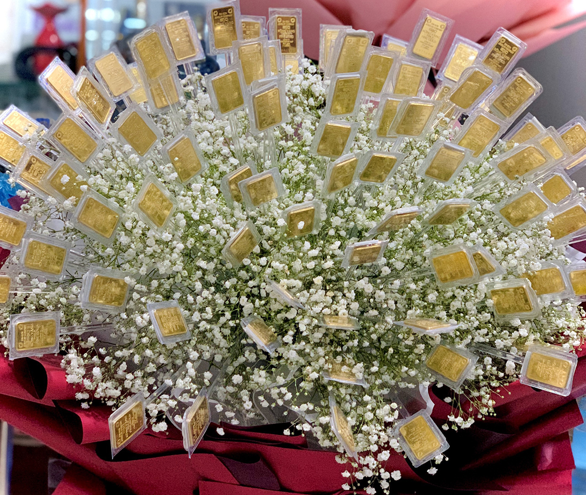
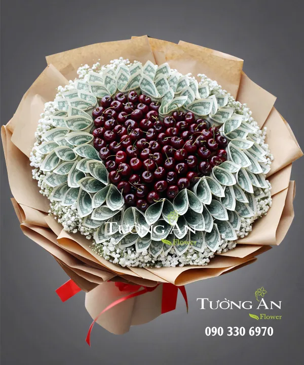
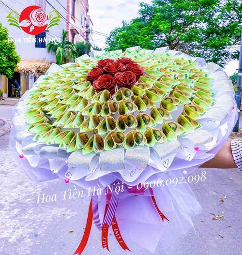
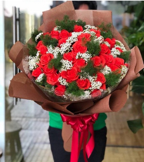
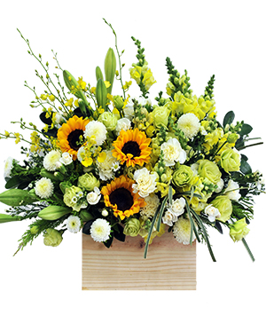
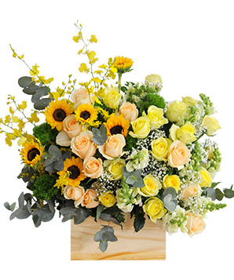
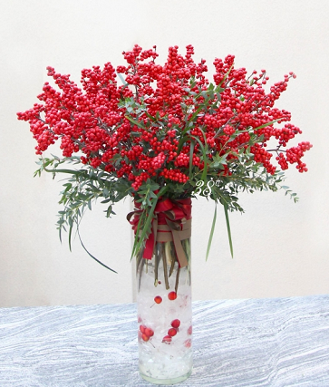

Hoa cao cấp
Việc chọn hoa cao cấp trở thành một phần quan trọng trong việc thể hiện tình cảm và thông điệp của người tặng. Việc chọn hoa cao cấp thể hiện sự quan tâm và tôn trọng của bạn đối với người nhận. Nó cho thấy bạn đã dành thời gian và tâm huyết để lựa chọn món quà phù hợp. Một bó hoa cao cấp đi kèm với món quà khác sẽ khiến món quà trở nên sang trọng và ý nghĩa hơn.

Hoa Tiền Cao Cấp
Bó hoa được thiết kế từ hoa hồng đỏ, trái cherry, tiền và phụ liệu đi kèm mang nhiều ý nghĩa đặc biệt, thể hiện thông điệp yêu thương, sự trân trọng, chúc mừng và mong muốn may mắn, tài lộc.

Không còn là những đóa hoa thông thường, hoa Hồng giờ đây được chế tác tinh xảo và cầu kỳ hơn với tranh bông hoa Hồng dát vàng.
Hoa Hồng Mạ Vàng 24k
Không còn là những đóa hoa thông thường, hoa Hồng giờ đây được chế tác tinh xảo và cầu kỳ hơn với tranh bông hoa Hồng dát vàng.
Đây sẽ là quà tặng cao cấp và ý nghĩa dành tặng cho những thân thương vào ngày đặc biệt.

Vàng 999 là loại vàng nguyên chất, có giá trị cao, thể hiện sự sang trọng và đẳng cấp của người tặng.
Hoa Vàng 9999
Vàng 999 là loại vàng nguyên chất, có giá trị cao, thể hiện sự sang trọng và đẳng cấp của người tặng.
Vàng 999 mix với hoa cúc baby là món quà độc đáo, sang trọng và ý nghĩa, thể hiện tình cảm chân thành và lời chúc tốt đẹp đến người nhận.

Hoa Siêu Cao Cấp
Bó hoa bao gồm 200 tờ tiền 500k, tương đương 100 triệu đồng, mang giá trị thực tế cao, thể hiện sự trân trọng và quan tâm của người tặng đối với người nhận.
Đặc biệt được mix với hoa hồng thành các chữ khác nhau là món quà độc đáo, sang trọng và ý nghĩa

Trái cherry được xếp thành hình trái tim bên ngoài được bao quanh bởi những tờ 2 usd và hoa baby viền ngoài cùng.
Hoa Tiền Cao Cấp
Trái cherry được xếp thành hình trái tim bên ngoài được bao quanh bởi những tờ 2 usd và hoa baby viền ngoài cùng.
Màu đỏ của quả cherry tượng trưng cho may mắn và sự thuận lợi trong mọi việc.

Bó hoa bao gồm tiền polymer mới, đẹp, mang giá trị thực tế và có thể sử dụng được. Ngoài ra nó còn thể hiện sự đẳng's cấp của người tặng.
Hoa Tiền 100k Siêu cấp
Bó hoa bao gồm tiền polymer mới, đẹp, mang giá trị thực tế và có thể sử dụng được. Ngoài ra nó còn thể hiện sự đẳng's cấp của người tặng.
Phù hợp với các dịp lễ tình nhân các ngày Quốc Tế

Hoa Tiền 20k
Bó hoa 20k mix hoa hồng là lựa chọn phù hợp cho những ai muốn mang đến món quà ý nghĩa mà vẫn tiết kiệm. Mặc dù giá thành không cao, nhưng bó hoa vẫn thể hiện được thông điệp yêu thương và quan tâm đến người nhận.

Hoa Tiền 2đô
Hoa tiền 2 đô: Món quà độc đáo và ý nghĩa Hoa tiền 2 đô là một loại hình nghệ thuật độc đáo sử dụng những tờ tiền 2 đô la Mỹ để tạo hình thành các bông hoa. Món quà này mang nhiều ý nghĩa đặc biệt
Hoa kỉ niệm
Món quà để ôn lại những sự kiện đáng nhớ như: ngày cưới, ngày gặp nhau, hợp đồng đầu tiên với khách hàng VIP… là những bông hoa kỉ niệm tươi thắm. Để cùng nhớ lại chuyện xưa thì thật là tươi sáng và đầy năng lượng, làm tăng thêm vẻ đẹp của những sự kiện.
Giỏ Hoa An Bình
Một màu vàng chấm nét đỏ trên nền xanh, tất cả tạo nên một bức tranh muôn màu sắc. Như những kỷ niệm đẹp đã được nhắc lại để chúng ta trân quý và xích gần nhau hơn, hâm nóng tình cảm cũng như trao nhau nhiều niềm vui. Mẫu hoa như gửi đến người thân yêu, với lời nhắc nhớ về một thời an yên và bình dị nhưng vô cùng ấm áp.
Giọt Nắng Bên Thềm
Được kết hợp với màu vàng làm tông màu chủ đạo, bình hoa "Giọt nắng bên thềm" như những ánh sáng rực rỡ chiếu soi khắp không gian ban sự ấm áp, bình an đến cho mọi người. Bình hoa kết hợp từ hoa hướng dương tượng trưng cho mặt trời, hoa lan vàng tượng trưng cho sức sống vươn cao và hoa cẩm chướng tượng trưng cho sự tự do. Một bức tranh vô cùng đẹp và đầy sức sống.
Gửi Gắm Yêu Thương
Với sự kết hợp hài hòa giữa hoa hồng da và hồng phấn như thông điệp gửi gắm yêu thương đến người nhận. Cách bó hoa tròn đầy như muốn nói đến tình yêu trọn vẹn của anh dành cho em. Bó hoa sẽ mang đến cho người nhận thật nhiều niềm vui, sức khỏe và hạnh phúc tận hưởng cuộc sống tươi đẹp muôn màu muôn vẻ xung quanh mình.
Hạnh Phúc Bất Tận
Với tông màu hồng trắng, bình hoa được thiết kế đầy tươi sáng. Những cánh hồng và lan hồ điệp tỏa nắng trên nền trời cẩm tú cầu đầy đặn. "Hạnh phúc bất tận" toát lên vẻ ngọt ngào và đầy sang trọng. Đây quả là món quà tuyệt vời dành tặng những người thân yêu của bạn.
Just say thank you
Mỗi một màu hoa, là một thông điệp sâu sắc. Với 100 đóa hoa hồng vàng tượng trưng cho tình yêu luôn ấm áp và bền lâu của chàng trai muốn gửi tới cô ấy. Là lời hẹn thề sống với nhau trăm năm hạnh phúc.

Love to be Loved
Một màu đỏ mãnh liệt và một màu tím chân thành mà hoa hồng mang lại đã tạo cho bình hoa một nét đẹp quý phái. Ngoài ra, những nét chấm phá của hoa cẩm chướng, cát tường đã tô thêm sự mềm mại uyển chuyển cho bình hoa. Thay lời muốn nói, bình hoa được gửi đến người ấy với một tình yêu thanh khiết, trong sáng nhưng cũng rất mãnh liệt.
Ngày em đến
Ngày em đến, thiên nhiên như chào đón em bằng những cánh hoa xinh tươi, trong một khu vườn đầy sức sống xanh mát. Mọi thử trở nên an yên và hạnh phúc. Trao tặng đến người thân yêu của bạn mẫu hoa này cũng chính là gửi đến họ sự bình an, sức khỏe và niềm vui ấm áp.
Sum Họp
Với tông màu vàng đầy rực rỡ và tươi vui, hộp hoa " Sum họp" mang một ý nghĩa đoàn viên, ấm áp. Cách bố trí hoa hướng dương vươn lên đón chào ánh sáng và được mõm sói bao bọc chở che, như hình ảnh một gia đình sum vầy hạnh phúc. Mẫu hoa thích hợp cho ngày đoàn viên, mừng thọ bố mẹ...
Hoa khai trương
Hoa khai trương là lời chúc hay nhất cho ngày khởi sự nhằm hướng tới một khởi đầu tốt đẹp và tươi sáng. Quý khách vui lòng tham khảo những mẫu hoa bên dưới để chọn cho mình lẵng hoa ưng ý. Chúng tôi sẽ gửi tấm lòng của quý khách đến đúng địa chỉ và thời gian theo yêu cầu.
May Mắn Gõ Cửa
Trong ngày lễ trọng đại, ai cũng mong nhận được những lời chúc tốt đẹp từ khách mời. Hãy mang lẵng hoa xinh đẹp này đến với gia chủ, với lời gửi gắm may mắn gõ cửa nhà họ. Vận mệnh tài lộc sẽ đến với gia chủ, vì những cánh hoa chính là thiên sứ mang thịnh vượng đến ở lại với họ trong suốt sự nghiệp kinh doanh của mình.
Quyết Thắng
Rực rỡ sắc đỏ như chiếc áo trải dài đến con đường thành công. Trên con đường đó, gia chủ sẽ nhận được những ánh vàng của sự nhiệt huyết, niềm tin kiêu hãnh. Vươn cao như thiên điểu, đó là mục tiêu tới đích thành công. Qủa là món quà ý nghĩa mà người gửi muốn tặng người thân trong ngày khai trương.
Tài Lộc Tràn Đầy
Được mời đến dự buổi lễ khai trương, là gia chủ muốn chào đón những người thật lòng yêu thương, mang may mắn và thành ý tốt đẹp đến với gia đình họ. Vì họ tin rằng, những vị khách quý là những người sẽ mang tài lộc đến, và họ sẽ có động lực mạnh mẽ hơn cho công việc khởi đầu. Chính vì thế, ngoài những lời chúc, chúng ta hãy mang những kệ hoa đầy đặn, tươi xinh, và rực rỡ như thế này để tặng gia chủ, như thay lời muốn nóivà cũng là sứ giả của thành công.
Tuổi Trẻ Thành Công
Một màu sắc tươi trẻ đầy sức sống, chào đón một sự kiện quan trọng diễn ra trong không khí rộn ràng lời chúc mừng. Lẵng hoa thật sự đặc biệt khi được trao tặng cho gia chủ nhân, như một lòng thành gửi gắm đến họ rằng: Hãy luôn tươi vui, hăng say, rồi thành công sẽ đến gõ cửa nhà bạn.
Tươi Xanh Thịnh Vượng
Dựa trên sự mong muốn của vị khách người Nhật Bản, florist cho ra tác phẩm nghệ thuật đầy thanh tao và tươi sáng. Trên nền xanh từ hồng môn và lá nhập khẩu, là nổi lên trên là màu vàng tươi thắm từ cánh hồng và màu trắng tinh khôi từ lan hồ điệp. Hoa lan vũ nữ gây uyển chuyển cho lẵng hoa bởi các cánh hoa mảnh mai sắc sảo. Người gửi muốn gửi lời chúc tới gia chủ: Hãy luôn tươi xanh, khỏe mạnh và vươn cao, thành công thịnh vượng sẽ đến với nhà bạn.
Vạn Sự Khởi Đầu
Vạn sự khởi đầu nan, chúc cho mọi điều tốt đẹp trong ngày trọng đại. Bắt đầu may mắn suôn sẻ thì sẽ nhanh đạt tới thành công. Dành tặng lẵng hoa với tông màu vàng chủ đạo tới gia chủ, như lời cầu chúc mọi việc tươi như ánh nắng, luôn tỏa sáng như những cánh hướng dương, thịnh vượng như hoa lan và tiền vào như nước như hoa đồng tiền.
Vinh Hoa Phú Quý
Vinh hoa sẽ về với nhà gia chủ nếu rước em lẵng hoa này. Sự kết hợp mùa đỏ, vàng và hồng phấn từ hoa hồng đã tạo nên màu sắc thăng hoa. Trên cùng là hướng dương vươn tới ánh sáng thành công. Phú quý chắc chắn ghé thăm nhà gia chủ và ở lại.
Vươn Ra Biển Khơi
Trong ngày vui trọng đại, gia chủ nào cũng muốn nhận được những lời chúc tốt đẹp nhất, để đem lại may mắn cho họ. Đến lễ khai trương, thật là thiếu sót nếu chúng ta không mang theo kệ hoa thật tươi và hiện diện nhiều loài hoa ý nghĩa. Hoa hướng dương mang ánh sáng đến cho việc kinh doanh, hoa hồng môn là sự niềm nở, hoa lan là nhiệt huyết, cẩm tú cầu là nhiệt huyết tròn đầy, và hoa ly là thịnh vượng. Hội tụ nhiều điều giá trị và may mắn, gia chủ nhận được món quà này sẽ rất vui và hạnh phúc.
Hoa tang lễ
Vòng hoa tang chia buồn trong đám ma là một món quà dùng để truyền tải thông điệp về sự luyến tiếc và chia buồn đối với người mất cũng như đối với người sống. Ông bà ta có câu:“Nghĩa tử là nghĩa tận”, do đó hoa tang lễ chia buồn đóng vai trò quan trọng khi bạn muốn gửi lời phúng viếng trong đám ma, đám tang.
Chia Buồn Chia Xa
Những cánh hoa lan mỏng manh nhưng vô cùng sâu sắc được gửi đến gia quyến khi người thân yêu ra đi. Với lòng biết ơn và tưởng nhớ người ra đi, vòng hoa như xoa dịu nỗi đau cho người ở lại, cầu mong họ sớm vượt qua và tiếp tục cuộc sống, vì người đã khuất chắc chắn mong người ở lại sống tốt và chỉ nên nhớ những kỷ niệm đẹp của họ khi còn ở trần gian.
Đoạn Đường Cuối Cùng
Đoạn cuối con đường, luôn đồng hành bên cạnh là gia đình và người thân yêu. Thăm viếng người ra đi bằng một lẵng hoa như lời cầu mong họ hạnh phúc với thế giới bên kia, và đồng thời an ủi, xoa dịu nỗi đau của người ở lại. Để người ra đi được thanh thản và không gian tiễn đưa được ấm cúng trang nghiêm.

Hoa Tang Công Giáo
Khúc nhạc trầm tiễn biệt người đi, bài thánh ca vang vọng như lời cầu nguyện bay xa. Chia buồn cùng gia quyến bằng những vòng hoa ý nghĩa, thể hiện lòng thành kính phân ưu. Đồng thời, cầu chúc cho người ra đi sớm được về với niềm hạnh phúc đích thực, và hưởng vinh phúc muôn đời.
Ly Biệt
Con người sinh ra trên cõi đời này là như một vòng tròn định mệnh: Sinh-lão-bệnh-tử. Nhiều người đặt câu hỏi tôi sinh ra ở thế gian này để làm gì? Đó là sự sắp đặt của ông trời, và chúng ta phải sống sao cho đẹp người đẹp ta. Vì thế, khi qua đời, luôn có những người xung quanh chia sẻ và yêu thương. Dành tặng lẵng hoa ý nghĩa này cho người thân mà ta yêu quý như một lời từ biệt cuối cùng.
TRÀNG HOA TANG - THÀNH TÂM KÍNH VIẾNG
Tiễn người ra đi một chặng đường còn lại trên trần thế, để người được yên nghỉ giấc ngàn thu nơi suối vàng. Thành tâm kính viếng, chia buồn cùng gia đình và dâng lên những vòng hoa tươi tắn, mỉm cười để người ra đi được thanh thản.
Trở Về Cát Bụi
Sự ra đi của một người là niềm mất mát to lớn của người ở lại. Không thể nói lên lời, không thể bộc lộ hết sự tiêc nuối và niềm đau ấy, chúng ta hãy gửi tâm tư chia sẻ ấy vào những vòng hoa chia buồn. Như thay lời muốn nói, kiếp con người từ cát bụi sinh ra và quay trở về cát bụi.
Vì Sao Sáng
Một vì sao sẽ tỏa sáng ở trên trời cao, và sống một cuộc sống mới vô cùng yên bình và thanh thản. Vì sao đó rời bỏ cõi trần, để đến một chân trời mới, về với cội nguồn vốn có. Thành kính dâng lên họ một vòng hoa tươi thắm như lời cầu mong họ sớm được về chốn an nghỉ dành cho mình.
Tin Lành Kính Viếng
Niệm khúc cuối cất lên tiễn người ra đi mãi mãi. Dù đi xa, nhưng họ vẫn luôn trong lòng chúng ta. Những kỷ niệm đẹp, tấm lòng đẹp của họ vẫn luôn được lưu truyền mãi về sau. Kính viếng bằng vòng hoa chia buồn như lời phân ưu chân thành và tế nhị.
Hoa sinh nhật
Lẵng hoa sinh nhật là lời yêu thương với người yêu, là lòng biết ơn với cha mẹ, là tình thương với anh chị em, là lời chúc mừng với bạn bè nên chúng tôi luôn đặt nhiều tâm huyết để tấm lòng của quý khách hàng được thể hiện trọn vẹn.
Gói Trọn Niềm Tin
Cuộc sống vốn dĩ là những chặng đường thăng trầm mà chúng ta phải bước qua. Dù trong hoàn cảnh nào, chúng ta cũng vẫn luôn tạo niềm vui cho người thân, bạn bè tri kỷ. Vì chính họ sẽ đồng hành với chúng ta trong cuộc sống này. Tạo bất ngờ ngay giữa vòng xoay cuộc sống cho họ, để niềm vui sẽ được gói trọn trong tim và lưu giữ theo năm tháng.
Hộp Quà Hạnh Phúc
Sẽ có những hộp quà chứa đựng nhiều kỷ niệm đẹp, hay là những món đồ quý giá. Nhưng sẽ có những hộp quà tỏa ngát hương thơm từ hoa, và lấp lánh cánh hồng nở rộ. Đó là món quà với mong ước người thân chúng ta cũng sẽ vui cười, tươi trẻ trong phạm vi thế giới của riêng họ.
Keep loving
Trên nền trắng xanh của hoa cẩm tú cầu và hoa cát tường, là lấp ló những bông cát tường tím thơ mộng, như trái tim ngọt ngào của người con gái đón chào bờ vai chung thủy của chàng trai. Cho dù sóng gió ra sao, thì tình yêu ta dành cho nhau mãi mãi bền lâu. Tím chung thủy và trắng xanh sắc son sẽ là món quà bất ngờ dành tặng người mình yêu.
Miss you
Bó hoa chủ đạo là màu đỏ, với ngụ ý về tình yêu của anh về em. Từng ngày trôi qua, là những nhớ nhung, những cảm xúc lâng lâng chợt nghĩ về nhau. Nhớ về những tháng ngày hạnh phúc, những giây phút ta bên nhau. Đó là những kỷ niệm đẹp, và cần được trân quý. Bó hoa được dành tặng cho người mà ta yêu thương để nhắc nhớ về những kỷ niệm và cùng nhau giữ gìn phát triển mối quan hệ tốt hơn.
My Sunshine
Với tên gọi "My sunshine " như chào đón một ngày mới đầy sức sống và tràn đầy niềm vui. Mở đầu cho một sự kiện nhiều may mắn và thành công. Lẵng hoa phù hợp cho những sự kiện như lễ tốt nghiệp, khai trương, sinh nhật...
Sắc Màu Tình Yêu
Một hộp hoa với muôn sắc màu tình yêu. Hoa hồng phấn tượng trưng cho tình yêu ngọt ngào, hoa hạnh phúc lại là biểu tượng của tình yêu nồng nàn, còn những nụ lan hồ điệp lại là hình ảnh của tình yêu bền vững. Qủa là một mẫu hoa mang nhiều ý nghĩa cao đẹp, cũng như những cung bậc cảm xúc cho một tình yêu vĩnh cữu. Thật tinh tế để dành tặng đóa hoa này cho người đặc biệt, để tình yêu của họ thực sự tỏa hương.
Trái Tim Ấm Áp
Đúng với tên gọi của mẫu hoa "Trái tim ấm áp", một tình yêu lãng mạn và vô cùng ngọt ngào hiện trước mắt chúng ta. Với màu hồng đắm say tựa như trái tim đang thổn thức từ hoa hồng, được kết lại bởi dàn thạch thảo trắng tinh, một tấm chân tình đầy tràn nhiệt huyết và sức sống. Đây là một món quà yêu thương, chúc mừng, động viên những người thân yêu thật ý nghĩa. Nhận được bình hoa này là nhận được một vé đi vào lòng mỗi con người!
Yêu xa
Thật ngưỡng mộ cho những cặp đôi yêu xa. Họ có một tình yêu đủ mạnh mẽ và rộng lớn để chấp nhận việc không bên cạnh nhau. Mặc dù không nhìn thấy nhau, nhưng cả hai luôn hướng về nhau, và trái tim người này vẫn ở trong người kia. Để giữ tình cảm luôn nồng cháy, xa mặt nhưng một lòng bên nhau, thì gửi những bó hoa thương nhớ đến với họ, vì có hoa là bạn đồng hành truyền tải yêu thương nhanh nhất cho chúng ta.
Hoa tình yêu
Hoa tình yêu là phương tiện tuyệt vời để bày tỏ lòng cho đi với mong muốn điều tốt lành, tươi mới đến với người nhận. Những bó hoa tươi thắm tại www.nhom2.vn sẽ giúp quý khách nói hộ tình cảm và sự chân thành của mình.
LOVE YOU
Là con gái, ai cũng đều có tiêu chuẩn đối với người trong mộng của mình. Người thích đẹp trai, người ham tài giỏi, người thích địa vị, người mê ngoại hình. Cũng có người chỉ cần người đàn ông một lòng một dạ yêu thương mình, và cất cao giọng với tiếng: LOVE YOU.
Nồng cháy
Không cần phải diễn tả nhiều lời, bó hoa hồng đỏ vẫn hiển nhiên nói lên được một tình yêu bùng cháy đang hướng về một cô gái xinh đẹp. Không hổ danh là loài hoa bất hủ, dù đứng ở đâu hay một mình, cánh hoa vẫn có thể truyền tải được từng thông điệp và là biểu tượng vĩ đại cho tình yêu.
Thanh Xuân
Thanh xuân của chúng ta như một cơn mưa rào. Dễ bị cảm lạnh bởi tình yêu chớm qua. Thanh xuân cũng giống như một trời mùa hạ, dễ bị say nắng bởi tình yêu sét đánh.
Sóng Tình
Anh nguyện làm sóng, để luôn vỗ về bờ cát trắng. Anh ước làm mây, để trôi cùng gió trên bầu trời xanh thẵm. Anh sẽ là nắng, để sưởi ấm trái tim mong manh. Và anh sẽ là mưa, để tưới gội cho tâm hồn em mát.
Em là Cả Bầu Trời
Cẩm tú cầu, là một loài hoa mang vẻ đẹp diệu kỳ, như quả địa cầu ôm trọn hạnh phúc. Loài hoa tượng trưng cho lòng thành, sự biết ơn. Rất phù hợp để tỏ bày tình cảm chân thật của mình tới người ấy, hay bày tỏ lòng tôn kính và cảm ơn đến người mà ta yêu quý.
Tình Yêu Dịu Dàng
Với tông màu chủ đạo mà hoa hồng phấn đã tạo ra, muốn nhắn nhủ đến những cặp đôi về một tình yêu dịu dàng mà sâu lắng. Nếu cô gái của bạn là mẫu người yêu sự mộng mơ, thơ ngây, thì hãy dành cho cô ấy những bó hoa ngọt ngào như thế này nhé!
Tinh Yêu Sắc Son
Trong tình yêu, có những lúc cần sự mãnh liệt nồng cháy, nhưng cũng có lúc cần bình yên sâu lắng. Không phải cầu kỳ tráng lệ, mà chỉ đơn giản nhẹ nhàng tĩnh lặng. Chiều tà cùng ngắm hoàng hôn buông xuống, tựa vào vai nhau và nghe một khúc hát du dương. Như thế cũng đủ làm lòng ta yêu thương đến lạ.

Tình lung linh
Hãy tin anh, em nhé!” Thật là một tình yêu lung linh, cô gái nào mà không xao động khi phải nghe những lời này? Và điều đặc biệt, hình ảnh chàng trai cầm bó hoa trên tay, tiến đến gần và nói với em rằng hãy tin anh, thì em nào dám từ chối. Hãy tạo cho mình những tình yêu đẹp như vậy.
Hoa cưới
Bó hoa cưới cầm tay hay hoa trang trí vào ngày cưới, giúp cho tiệc vui của bạn thêm đẹp, nổi bật và lãng mạn hơn. Thế Giới Hoa sẽ làm cho ngày cưới của bạn thêm đặc biệt với những bó hoa cưới tuyệt đẹp, không kém phần độc đáo và sang trọng.
Dịu dàng
Tuy hết sức giản đơn với màu trắng của hoa Arum, nhưng cô dâu nào cầm trên tay bó hoa này, sẽ rất thanh cao và lịch thiệp. Bởi vẻ tinh khiết đầy quyến rũ của nó, bó hoa sẽ phù hợp cho những cô nàng thích sự nhẹ nhàng dễ chịu và hiền lành trong chính tính cách của mình.
Em trong mắt anh
Em trong mắt anh luôn là cô dâu xinh đẹp, tinh khiết và sáng ngời. Em như chiếc loa kèn thức tỉnh anh mỗi sớm mai, là cành hồng dịu dàng khi anh được em yêu, và là những cánh phi yến mỏng manh để anh ôm em vào lòng che chở.
Happy Ending
Với thiết kế sang trọng, bó hoa cầm tay là hiện diện sự quý phái của cô dâu khi sánh đôi cùng chú rể. Cô dâu với hình mẫu luôn ngọt ngào, trìu mến nhưng cũng rất mạnh mẽ, sức sống tràn đầy. Cô dâu đã sẵn sàng để cùng với chú rể xây đắp hạnh phúc cho riêng mình.
Ngày vui trọng đại
Đời con gái có một ngày trọng đại nhất, đó là ngày được dắt tay nhau cùng đi lên giáo đường. Nơi thiêng liêng chứng kết cho tình yêu đúng nghĩa và đẹp đẽ. Tay trong tay, không thể thiếu một bó hoa tươi, đó là nét đẹp được tôn vinh thêm sự duyên dáng cho cô dâu trong ngày trọng đại ấy.
Ngọt ngào từng phút giây
Sự đơn giản nhẹ nhàng của hoa tulip và hoa hồng tạo nên một màu trắng tinh khiết, xen kẽ các nhánh lá xanh mơn là sức sống của tình yêu đôi lứa. Cô dâu sở hữa bó hoa này, sẽ làm cho nàng trở nên quý phái sang trọng, như chính những cánh hoa ấy mang lại.
Tình sắc son
Cầm bó hoa lavender trong tay, cô dâu xinh đẹp lại càng trở nên sang trọng hơn. Bó hoa như lời thề hứa cho một cuộc tình sắt son và bền chặt. Tình vợ nghĩa chồng sau này sẽ gắn kết và đồng lòng với nhau, cùng nhau dìu dắt con cái đón chào bến bờ hạnh phúc.
Trao em
Vẻ đẹp rực rỡ của hoa tươi như chứng minh cho tình yêu vĩnh cửu của các cặp đôi. Có thể nói, hoa là món quà, là thông điệp để gửi đến đôi lứa yêu nhau. Chính vì thế, trong ngày cưới, ngày trọng đại để cùng về chung một nhà, cô dâu không thể thiếu một bó hoa cầm tay. Là kết tinh cho tình yêu, dừng chân với tên gọi là vợ là chồng, và mở ra bước ngoặc cho một gia đình hạnh phúc.
Vững chãi
Đây là một trong bộ sưu tập những mẫu hoa cầm tay cô dâu bằng hoa sen đẹp nhất. Mẫu hoa sen được thegioihoa.net chọn lựa một cách kỹ lưỡng và tinh tế để tạo nên những bó hoa sen tôn vinh thêm cho vẻ đẹp của cô dâu trong ngày cưới. Độc đáo và thật tinh khiết như hương thơm của loài hoa này mang lại.
Hoa sự kiện
Đẹp, sang mà đừng quá tốn kém vì hoa sự kiện vô cùng đa dạng. Do đó, quý khách chỉ cần gửi yêu cầu và Thế Giới Hoa sẽ thiết kế làm sao bạn có được nhiều loại hoa đẹp trong sự kiện với mức phí tiết kiệm nhất.
Best Wishes
Với những đóa hồng vàng và cẩm chướng vàng đã tạo nên bức tranh đầy niềm vui và ước muốn cho khởi đầu mới. Điểm nhấn là những cành thiên điểu rực rỡ vươn cao như muốn gửi gắm lời chúc tốt đẹp đến người nhận, với hy vọng luôn gặt hái được nhiều thành công trên con đường phía trước. Phù hợp để tặng nhân dịp khai trương, họp mặt, kỉ niệm...
Chắp cánh
Trong cuộc đời này, ai cũng nuôi nấng cho mình những ước mơ để phấn đấu. Nhưng không phải ai cũng có đủ điều kiện để thực hiện được chúng. Vì thế, rất cần những sự động viên, hỗ trợ từ những người thân yêu của họ, thì giấc mơ có thể chạm được và vươn tới thành công. Hộp hoa "chấp cánh" như mang thông điệp đến với người nhận: Sẽ luôn có những người yêu thương bên cạnh, ủng hộ, và cùng nhau hỗ trợ giúp ta chấp cánh bay đến ước mơ, cũng như giúp chính họ tìm đến bến bờ yên vui, hạnh phúc.
Chúc mừng tốt nghiệp
Bó hoa được thiết kế đặc trưng với chú gấu bông xinh xắn, dành riêng cho những người mà bạn yêu thương nhân dịp lễ tốt nghiệp. Với những cánh hoa hướng dương như lời chúc tốt đẹp nhất đến với họ, mong rằng họ như những cánh hoa luôn vươn cao ra ánh mặt trời, hướng về tương lai đầy tươi sáng và thành công.
Khúc hát thành công
Khi chứng kiến những người thân yêu của mình thành công trong sự nghiệp lẫn cuộc sống, thì đó là niềm vui và tự hào to lớn đối với chúng ta. Để bày tỏ cảm xúc hân hoan này, thì những cành hoa xinh tươi, muôn màu khoe sắc sẽ giúp chúng ta truyền tải được khúc ca chúc mừng và chúc cho sự phát triển ngày càng mạnh mẽ vươn xa hơn nữa.
Nắng mai
Với tên gọi "Nắng mai" như chào đón một ngày mới đầy sức sống và tràn đầy niềm vui. Mở đầu cho một sự kiện nhiều may mắn và thành công. Bó hoa phù hợp cho những sự kiện như lễ tốt nghiệp, khai trương, sinh nhật...

Niềm tin
Niềm tin, là điều mà chúng ta cần người thân yêu mình đặt vào cho những ước mơ, mục tiêu sống. Nếu trong bước đi thực hiện ước mơ, luôn có sự đồng hành và tin tưởng của gia đình, thì đó chính là nguồn động viên to lớn nhất để ta vững tin hơn. Kèm theo lời ủng hộ, cần có những giỏ hoa xinh tươi và đầy sức sống, như là nguồn năng lượng tiếp thêm sức mạnh cho người thân chúng ta.

Tuổi trẻ
Với thiết kế theo tông màu vàng chủ đạo, hộp hoa là sự kết hợp giữa những cánh hướng dương và hoa hồng rực rỡ như muốn gửi đến người nhận lời chúc: Hãy cứ đam mê, mạnh mẽ thực hiện những ước mơ của mình. Dù có phong ba bão táp, thì hộp hoa gửi đến bạn như tiếp thêm sức mạnh để bạn đi xây dựng tương lai cho riêng mình.
Vạn sự như ý
Để chúc mừng những người thân yêu của chúng ta trong các dịp lễ khai trương, lễ kỉ niệm, họp mặt... thì một chậu lan vàng sang trọng được trang trí một cách đẹp đẽ là một món quà tuyệt vời. Với ý nghĩa chúc cho họ mọi việc như ý mình muốn, thành công trong công việc và hạnh phúc trong các mối quan hệ.
Hoa ngày lễ
Hoa ngày lễ tại Việt Nam chủ yếu dành cho phái đẹp vì họ xứng đáng được tôn vinh. Nam nhi nên chăm sóc, yêu thương và trân trọng người phụ nữ của mình bằng những bó hoa tươi thắm, sang trọng và mới lạ tại Thế Giới Hoa.
Lời tự tình
Những cành đào đông nhập nhẩu được nâng niu trên nền lá bạc tạo một bó hoa nồng thắm. Ngoài ra, màu trắng chấm phá của baby trắng đã tô thêm cho bó hoa nét tươi sáng và quyến rũ, nâng tầm đào đông sang trọng hơn. Dành tặng người thân yêu nhân ngày kỉ niệm, các ngày lễ đặc biệt...
Nắng vàng
Với một thiết kế độc đáo và ấn tượng, bình hoa "Nắng vàng" là món quà tuyệt vời dành tặng cho những người yêu thương, để tạo động lực cho một ngày mới tươi vui và rạng rỡ. Màu vàng, màu của hy vọng và đầy niềm tin. Ánh sáng chiếu rọi qua những tâm hồn bé nhỏ để cảm thấu những tâm tư tình cảm của họ. Tiếp thêm năng lượng cho một ngày làm việc đầy hưng phấn.
Phố không mùa
Ai cũng có những kỷ niệm điệm về thời thơ ấu, một thời gắn liền với câu thơ cha đọc, bài hát mẹ ru. Khi cuộc sống hiện đại mở ra, thì những tinh hoa văn hóa nhân loại được tỏ hiện. Đôi lúc chúng ta dừng chân, nghĩ về phố xưa, nơi ta lớn lên và trưởng thành. Dù phố có xưa, có là quá khứ, thì ta luôn giữ trong lòng một niềm tự hào, vì chính nơi ấy, ta đã được học làm người.
